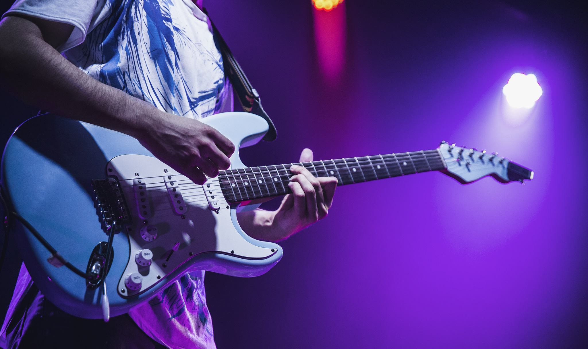
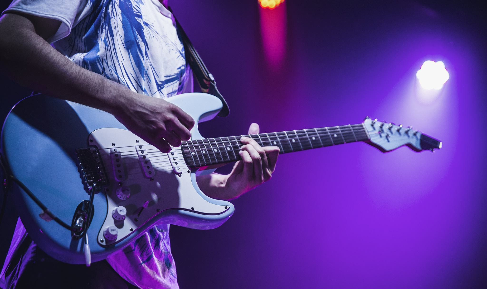

My name is
Dario Colaciuri
Dario Colaciuri nace el 9 de septiembre de 1991 en Buenos Aires, Argentina. Estudio en el conservatorio superior de música "Manuel de Falla". Paralelo a su vida de estudios siempre estuvo activo musicalmente creando bandas o participando con artistas de distintos géneros. Ha participado con grandes músicos y artistas de la escena pero actualmente se encuentra creando contenido musical para redes sociales y trabajando como ghost producer para distintos artistas.